<div class="container-fluid">
    <nav class="navbar navbar-expand-lg navbar-dark bg-none">
        
        <!-- <a class="navbar-brand" [routerLink]="">SampleApp</a> -->
        <button class="navbar-toggler" type="button" data-toggle="collapse" data-target="#navbarNav" aria-controls="navbarNav" aria-expanded="false" aria-label="Toggle navigation">
          <span class="navbar-toggler-icon"></span>
        </button>
        <div class="collapse navbar-collapse" id="navbarNav">
          <ul class="navbar-nav ml-auto">
            <li class="nav-item ">
              <a class="nav-link"            
              routerLinkActive="active"
              [routerLinkActiveOptions]="{exact: true}"
              [routerLink]="['/']">Dashboard</a>
            </li>
            <li class="nav-item">
              <a class="nav-link" 
              routerLinkActive="active"
              [routerLink]="['/ny-times']"
              >Ny-Times API</a>
            </li>
          </ul>
        </div>
      </nav>
      

</div>

